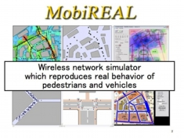
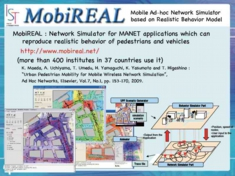

Future Ubiquitous Society
What's MobiREAL ?
MobiREAL is a novel network simulator for ubiquitous society with mobile devices. It can simulate realistic mobility of humans and automobiles, and enables to change their behavior depending on a given application context.

MobiREAL can easily describe mobility of nodes with C++. We adopt a probabilistic rule-based model to describe behavior of mobile nodes. The proposed model allows us to describe how mobile nodes change their destinations, routes and speeds/directions based on their positions, surroundings (obstacles and neighboring nodes), information obtained from applications, and so on.
{kind=link}
{kind=link}
Scalability of MANET Simulation
In MANET simulation for real world, trace data are useful, however, their evaluation requires much time and costs. In our project, we have proposed a new method to automatically generate natural mobility patterns realizing designated node density distributions.
{kind=link}
We have applied the method for data dissemination based ITS applications, compared them with trace based mobility patterns, and shown their similarity about data dissemination ratio and so on. This helps to make evaluation of applications more scalable and efficient.
Open Source
If you want to use MobiREAL, please visit the following URL.
http://www.mobireal.net/
Currently, MobiREAL has been used for more than 400 institutes in 37 countries.
[Acknowledgement]
This project is partly supported by Stragetic Information and Communications R&D Promotion Programs (SCOPE) in Japanese Ministry of Internal Affairs and Communications.

{kind=link}
[Selected Publications]
K. Maeda, A. Uchiyama, T. Umedu, H. Yamaguchi, K. Yasumoto and T. Higashino : "Urban Pedestrian Mobility for Mobile Wireless Network Simulation", Ad Hoc Networks, Elsevier, Vol.7, No.1, pp.153-170, 2009.
K. Maeda, K. Sato, K. Konishi, A. Yamasaki, A. Uchiyama, H. Yamaguchi, K. Yasumoto and T. Higashino : "Getting Urban Pedestrian Flow from Simple Observation : Realistic Mobility Generation in Wireless Network Simulation", Proc. of 8th ACM/IEEE Int. Symp. on Modeling, Analysis and Simulation of Wireless and Mobile Systems (MSWiM2005), pp. 151-158, 2005.
A. Hiromori, T. Umedu, H. Yamaguchi and T. Higashino : "Protocol Testing and Performance Evaluation for MANETs with Non-uniform Node Density Distribution", Proc. of 24th IFIP Int. Conf. on Testing Software and Systems (ICTSS'12), Lecture Notes in Computer Science (LNCS), Vol.7641, pp.231-246, 2012.
E. Ueno, A. Hiromori, H. Yamaguchi and T. Higashino : "A Simple Mobility Model Realizing Designated Node Distributions and Natural Node Movement", Proc. of 2011 IEEE 8th Int. Conf. on Mobile Ad-Hoc and Sensor Systems (MASS 2011), pp.302-311, 2011.
T. Kanaya, A. Hiromori, H. Yamaguchi and T. Higashino : "HumanS: A Human Mobility Sensing Simulator", Proc. of 5th IFIP Int. Conf. on New Technologies, Mobility and Security, 2012.
{kind=link}
UPF (Urban Pedestrian Flows) Mobility
In order to perform precise evaluation of MANET applications in the real world, realistic mobility models are needed in wireless network simulation. In this paper, we propose a new method to create urban pedestrian flows (UPF) mobility scenarios, which reproduce the walking behavior of pedestrians in urban areas. From given densities of pedestrians observed at several points, our method derives a UPF mobility scenario that reproduces the walking behavior of pedestrians consistent with the observed densities, using linear programming techniques.
K. Maeda, A. Uchiyama, T. Umedu, H. Yamaguchi, K. Yasumoto and T. Higashino : "Urban Pedestrian Mobility for Mobile Wireless Network Simulation", Ad Hoc Networks, Elsevier, Vol.7, No.1, pp. 153-170 (2009).